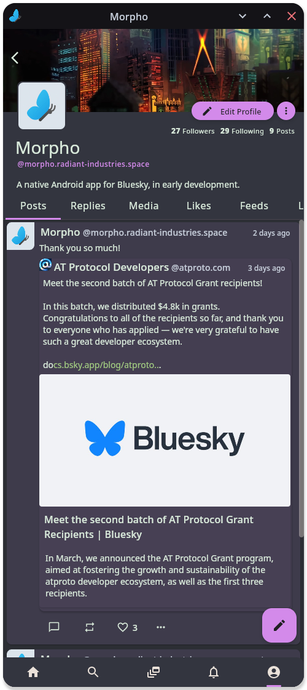

Genesis

This project started a while ago, and development work has been somewhat intermittent due to other time commitments.
The ultimate reason for it React Native and its issues. This is what the official client for Bluesky is written in,
the lead front-end developer is very much an Apple guy, and so wasn't aware of changes which needed to be made for Android,
down to basic things like saving images locally. The performance was not great and there were upstream bugs
in React Native's Android implementation which the Bluesky developers couldn't do anything about.
Secondarily, the official client did not scale well to larger screens
such as foldable devices or small tablets, having a very low information density at those sizes.
Other clients such as Skyfeed or deck.blue which did work better on larger screens and had an overall higher info density
had interfaces which were too busy and couldn't scale down either.
So there was and is a gap in the ecosystem for a client which strikes a good balance.
While I had the basics of a Kotlin library which talked to the Bluesky XRPC API from another developer,
who has since largely abandoned his project, a lot remained to be done both in terms of creating a pleasant
interface to the social network from Kotlin and in designing and implementing the interface I wanted.
Upon realizing that Google and co had put in significant effort to make a multiplatform version of Jetpack Compose,
and that, while not especially mature, it did work, I decided to brach out and target more platforms
Challenges and skills gained
Working on Morpho required adding yet another new programming language to my repertoire, Kotlin.
I also had to familiarize myself with the last decade of Android development, in all its complexities,
not having done any Android app development aside from a small foray using the Godot Engine to
make a very quick and dirty control interface for another project. That was educational, both
in terms of how things work, and how prioritizing making things modular and easy to swap out
can make project complexity balloon out of control.
It also required me to gain a lot more familiarity with how network services work,
and to learn how to at least read Typescript, since that was Bluesky's language of choice
for the official app and API implementation.